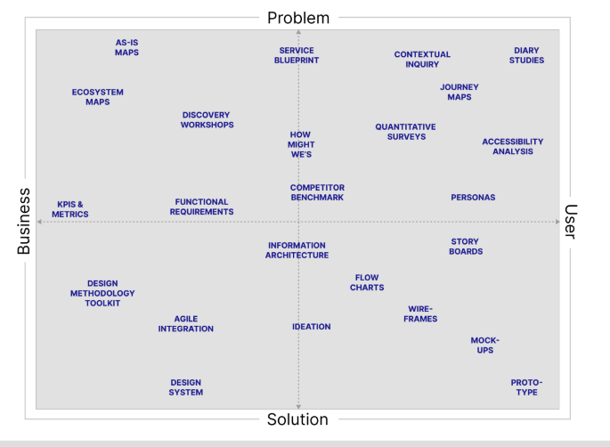

UX-workshop met VitaliUX workshop with Vitali
Hoe meet je de impact van UX en design?How do you measure the impact of UX and design?
In deze workshop liet Vitali zien hoe je de waarde van UX-werk meetbaar maakt. Designkeuzes voelen vaak intuïtief, maar zodra je ze aan cijfers koppelt, word je er ook verantwoordelijk voor. Dat besef veranderde hoe ik naar mijn eigen werk kijk. Hieronder vat ik de belangrijkste inzichten samen die ik heb meegenomen.
In this workshop, Vitali showed how you make the value of UX work measurable. Design choices often feel intuitive, but the moment you tie them to numbers, you also become accountable for them. That realization changed the way I look at my own work. Below I summarize the key takeaways I came away with.
Behoeften versus doelen van de gebruikerUser needs versus user goals

Een belangrijk onderscheid dat me bijbleef: wat een gebruiker nodig heeft is niet hetzelfde als wat een gebruiker denkt te willen. Functionele eisen gaan over de functies die je bouwt; niet-functionele eisen gaan over zaken als naleving en kwaliteit. Door dat scherp te houden, ontwerp je voor de echte behoefte in plaats van voor de eerste wens die wordt uitgesproken.
An important distinction that stuck with me: what a user needs is not the same as what a user thinks they want. Functional requirements are about the features you build; non-functional requirements cover things like compliance and quality. Keeping that sharp lets you design for the real need rather than the first wish that gets voiced.

Waarde-architectuurValue architecture

Wat ik hiervan meenam: een feature heeft pas waarde als gebruikers hem kunnen vinden en gebruiken. Vitali liet zien hoe je de 'waardekloof' overbrugt tussen wat een team bouwt en de meetbare impact daarvan, en hoe je dat koppelt aan de North Star en de KPI's van een bedrijf. Wat me het meest bijbleef: de gebruikersreis ziet er op papier lineair uit, maar in werkelijkheid is die rommelig — en daar moet je je metingen op aanpassen.
What I took from this: a feature only has value once users can find and use it. Vitali showed how you bridge the 'value gap' between what a team builds and its measurable impact, and how you tie that to a company's North Star and KPIs. What stuck with me most: the user journey looks linear on paper, but in reality it's messy — and your measurements have to account for that.
Return on investment (ROI)Return on investment (ROI)

Management denkt in rendement. Meestal is het doel een ROI boven de 15%, en die haal je door omzet te verhogen of kosten te verlagen. Ik leerde hoe je dat onderbouwt met concrete cijfers — zoals bespaarde gebruikersuren en supporturen — in plaats van te leunen op ijdelheidsstatistieken zoals sessieduur. Voor mij was dit het grootste inzicht: je moet de waarde van je werk kunnen vertalen naar de taal van het bedrijf.
Management thinks in terms of returns. The goal is usually an ROI above 15%, which you reach by increasing revenue or reducing costs. I learned how to back that up with concrete figures — such as saved user hours and support hours — instead of leaning on vanity metrics like session duration. For me this was the biggest insight: you need to be able to translate the value of your work into the language of the business.
Belanghebbenden overtuigenConvincing stakeholders
Als een belanghebbende het niet met je eens is, ligt dat zelden aan het ontwerp zelf. Vaak zijn ze het oneens over het probleem, over je aanpak, of twijfelen ze of de oplossing het doel wel haalt. Door dat onderscheid te maken kun je een gesprek veel gerichter voeren in plaats van langs elkaar heen te praten.
When a stakeholder disagrees with you, it's rarely about the design itself. Often they disagree about the problem, about your approach, or they doubt whether the solution will actually reach the goal. Making that distinction lets you have a much more focused conversation instead of talking past each other.
Wat ik heb meegenomenWhat I took away
Mijn belangrijkste les: design dat je niet kunt onderbouwen, is moeilijk te verdedigen. Door te leren hoe je impact meet, kan ik mijn keuzes uitleggen in een taal die ook buiten het designteam wordt begrepen — en dat maakt mijn werk overtuigender.
My biggest lesson: design you can't substantiate is hard to defend. By learning how to measure impact, I can explain my choices in a language that's understood outside the design team too — and that makes my work more convincing.